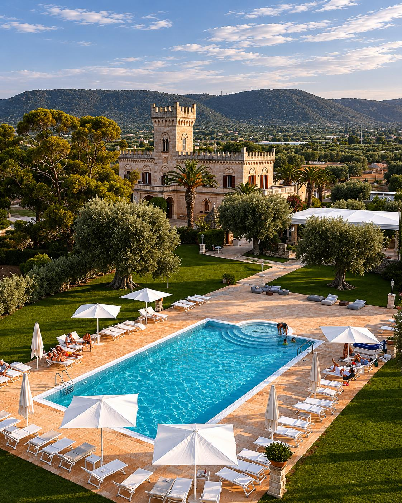
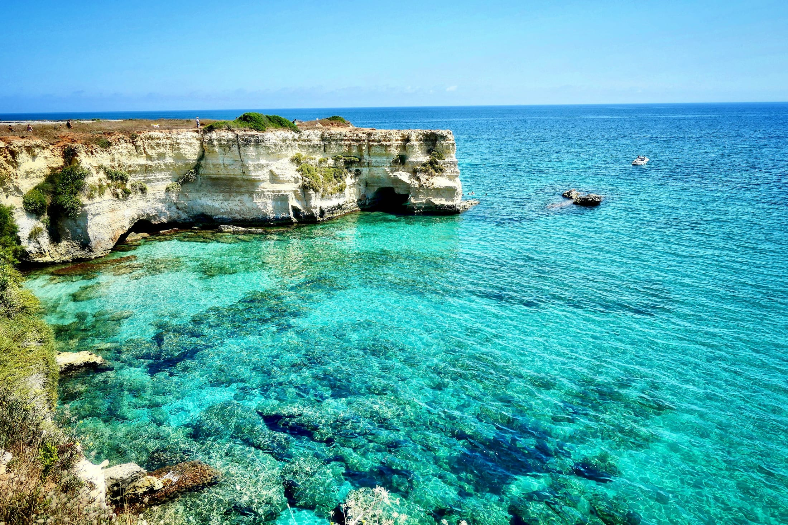
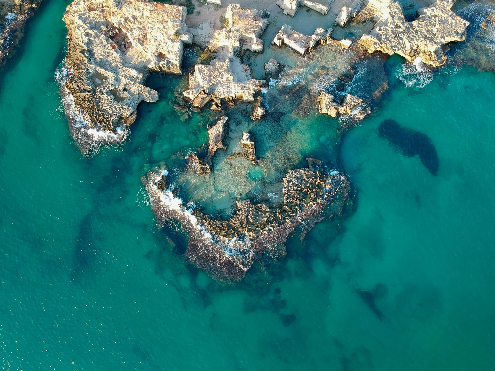
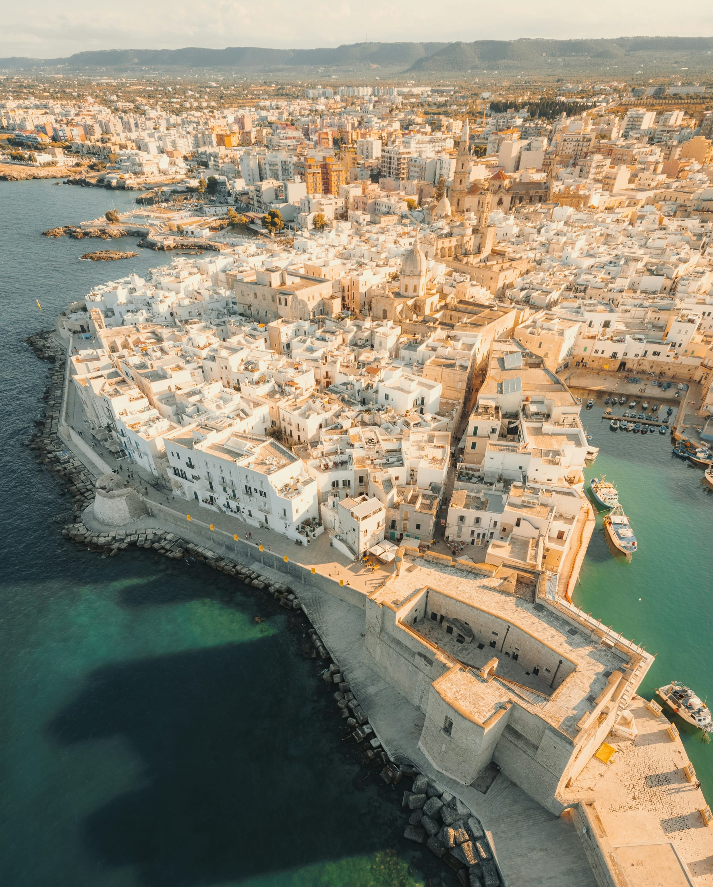
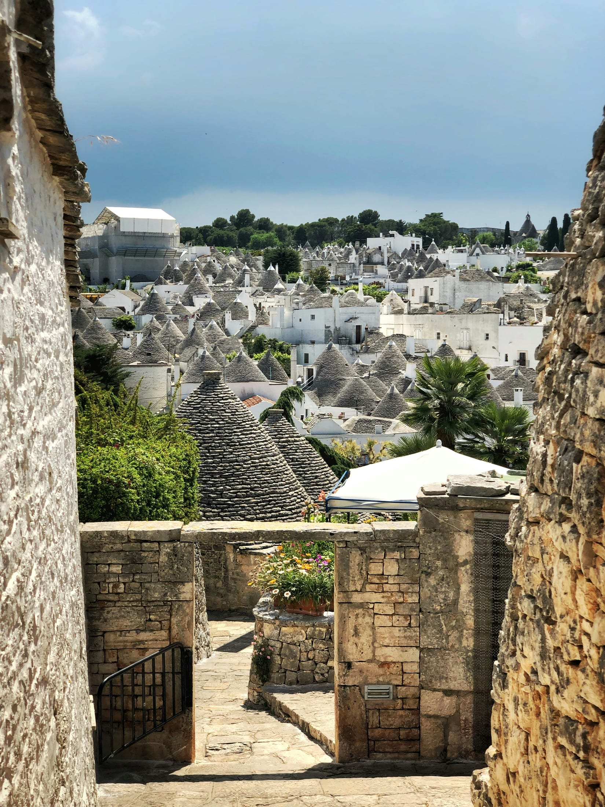
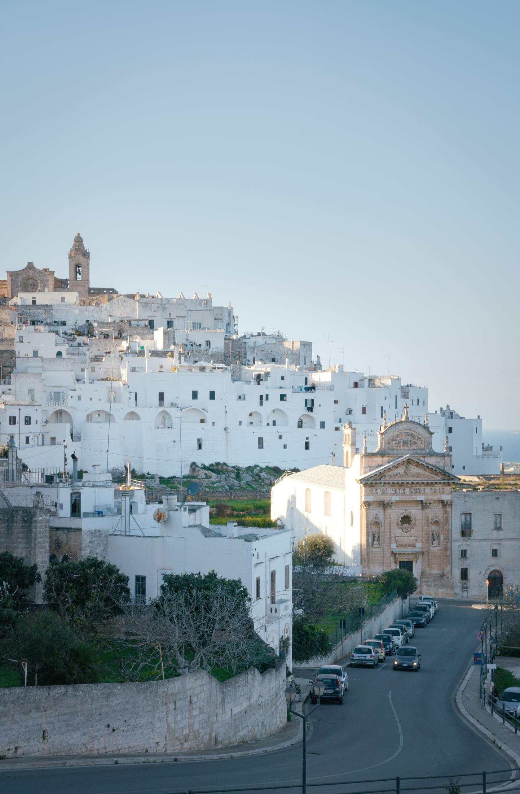
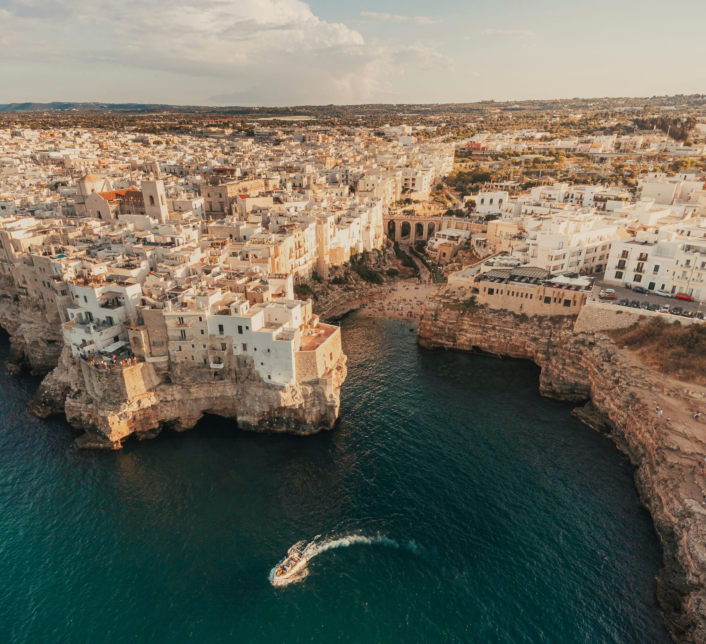

Masseria Salamina
A pochi passi dalla villa
Una delle masserie storiche più affascinanti della zona, tra uliveti secolari, degustazioni di olio extravergine e cucina del territorio.

Il territorio
Dintorni
A pochi chilometri dalla villa, un territorio antico e straordinario: trulli, mare cristallino, scavi romani, masserie e borghi bianchi affacciati sull'Adriatico.
Vicino alla villa

A pochi passi dalla villa
Una delle masserie storiche più affascinanti della zona, tra uliveti secolari, degustazioni di olio extravergine e cucina del territorio.

8 km dalla villa
Acque cristalline, piccoli porti di pescatori, stabilimenti balneari e spiagge lungo la costa adriatica.

30 km dalla villa
Un vivace borgo marinaro con un centro storico affacciato sul mare, calette nascoste e il suggestivo Castello Carlo V.
Da scoprire

30 km dalla villa
Patrimonio UNESCO e simbolo della Puglia, con i suoi celebri trulli in pietra bianca.

18 km dalla villa
La celebre Città Bianca, un intreccio di vicoli, piazzette e scorci panoramici sulla campagna e sul mare.

30 km dalla villa
Uno dei borghi più iconici della regione, arroccato sulle scogliere che si affacciano sull'Adriatico.